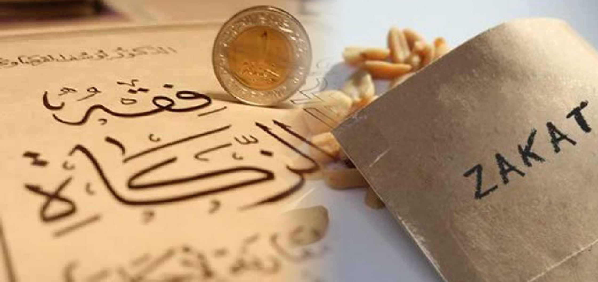

Zakat

In Islam, Zakat al-Fitr, also known as Sadaqat al-Fitr or Zakat al-Fitrah, is an obligatory form of alms-giving required of every able Muslim at the end of Ramadan. The purpose of Zakat al-Fitr is to enable poor people to celebrate Eid al-Fitr, the festival to break the fast of Ramadan